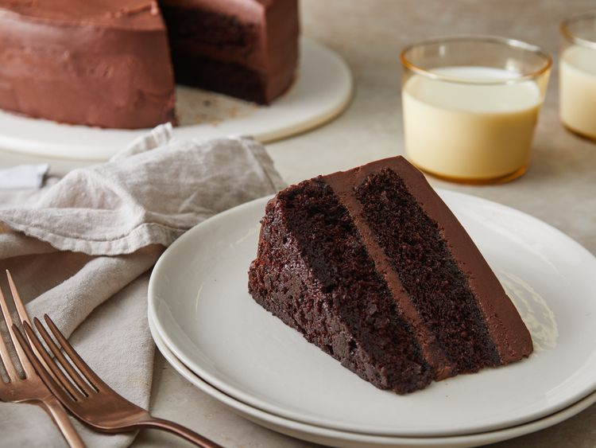

Chocolate Cake
This chocolate cake recipe with coffee is super spooky and suitable for all your black magic get-togethers.
Ingredients
- 2 cups white sugar
- 1 ¾ cups all-purpose flour
- ¾ cup unsweetened cocoa powder
- 2 teaspoons baking soda
- 1 teaspoon baking powder
- 1 teaspoon salt
- 1 cup strong brewed coffee
- 1 cup buttermilk
- ½ cup vegetable oil
- 2 large eggs
- 1 teaspoon vanilla extract
Steps
-
Preheat the oven to 350 degrees F (175 degrees C).
-
Grease and flour two 9-inch round cake pans or one 9x13-inch dish.
-
Combine sugar, flour, cocoa, baking soda, baking powder, and salt in a large bowl. Make a well in the center. Pour coffee, buttermilk, oil, eggs, and vanilla into the well. Beat for 2 minutes on medium speed. Batter will be thin.
-
Pour into the prepared pans.
-
Bake in the preheated oven until a toothpick inserted into the center of the cake comes out clean, 30 to 40 minutes.
-
Cool for 10 minutes, then remove from the pans and finish cooling on a wire rack.
-
Fill and frost as desired.
Home